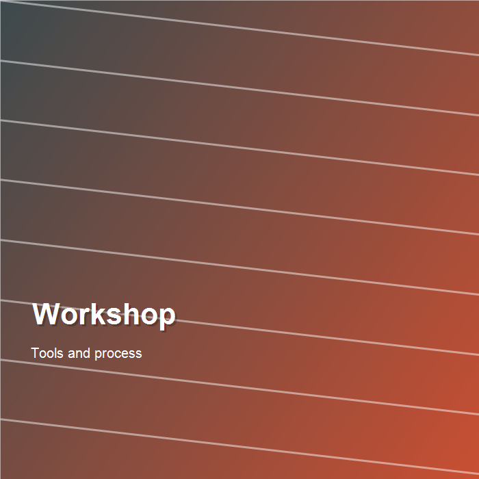
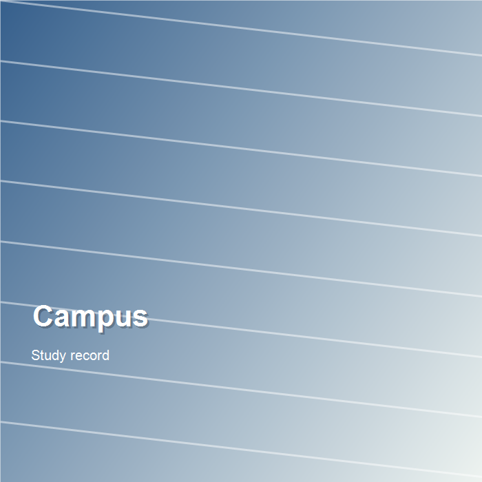
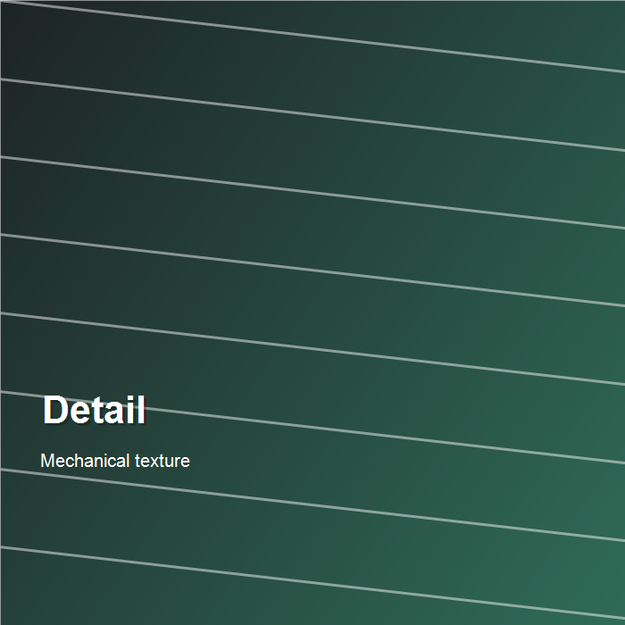
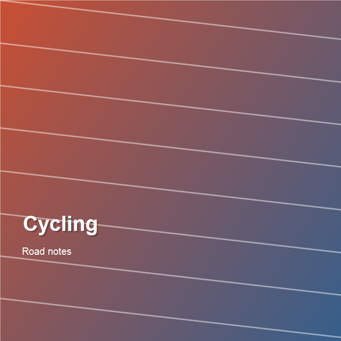

CAD / 结构
机械结构设计练习
用于展示建模、零件装配、尺寸标注和设计意图。之后可以替换为你的 SolidWorks 或 Fusion 作品。
About
我目前在日本学习机械工程，关注机械结构、制造方法、产品设计和工程表达。这个网站会持续更新课程项目、个人作品、摄影记录和骑行路线。
Projects
用于展示建模、零件装配、尺寸标注和设计意图。之后可以替换为你的 SolidWorks 或 Fusion 作品。

整理课堂报告、实验数据、仿真结果和反思，形成面向作品集的项目页面。

记录从想法、草图、材料选择到制作测试的全过程，适合后续扩展为单独项目页。
Gallery




Cycling
这里可以记录路线、距离、爬升、照片和当天感受。以后也可以接入 Strava 链接或 GPX 地图。
距离 42 km / 城市道路 / 适合周末恢复骑。
距离 18 km / 短途记录 / 拍摄素材收集。
预留给下一次骑行，可以加入地图截图和路线总结。